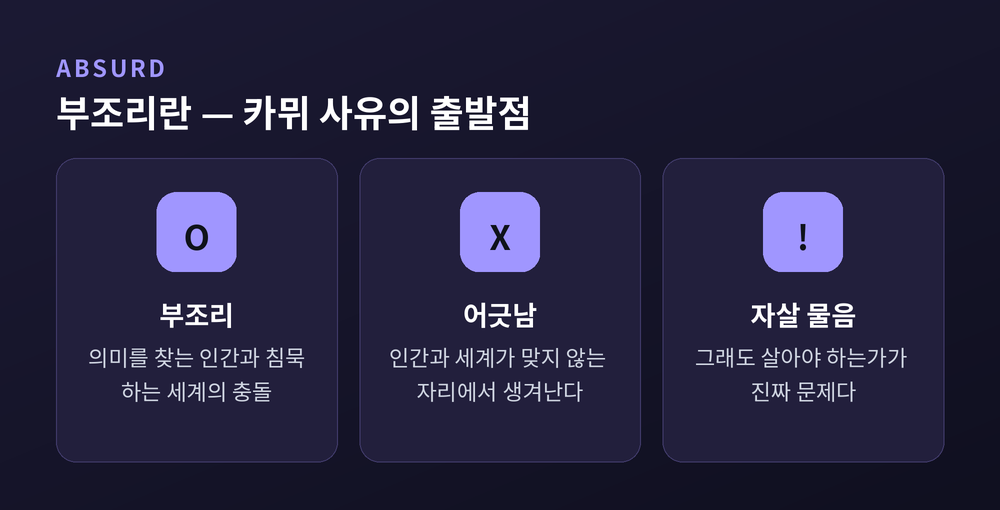
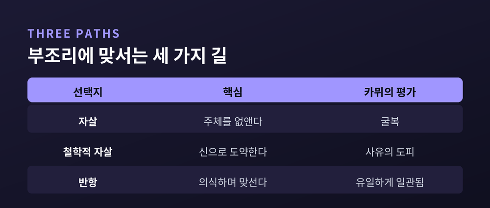

시지프 신화, 의미 없는 세계에서 어떻게 살 것인가
이번 글에서는 알베르 카뮈의 부조리 철학을 정리해 보겠습니다.
무의미해 보이는 세계 앞에서 그가 어떤 답을 내놓았는지, 『시지프 신화』를 따라 짚어 봅니다.
결론을 먼저 말씀드리면, 카뮈는 도망치지도 속이지도 말고 "맞서며 살라"고 권합니다.
먼저 용어부터 풀어 보겠습니다.
부조리(absurd)는 세상이 우스꽝스럽다는 뜻이 아닙니다.
카뮈가 말한 부조리는 두 가지의 충돌입니다.
하나는 의미를 찾으려는 인간의 갈망.
다른 하나는 그 물음에 답하지 않는, 침묵하는 세계.
그는 이 어긋남을 인간과 세계의 "이혼"이라 불렀습니다.
부조리는 인간에게만 있지도, 세계에만 있지도 않습니다.
둘이 마주치는 자리에서 생겨납니다.
그러니 부조리는 없앨 수 있는 문제가 아닙니다.
피할 수 없는 인간의 조건입니다.
『시지프 신화』는 1942년에 나온 철학 에세이입니다.
그 유명한 첫 문장은 이렇게 시작합니다.
"참으로 진지한 철학적 문제는 단 하나뿐이다. 그것은 자살이다."
도발적으로 들립니다만, 뜻은 분명합니다.
삶이 살 만한 가치가 있는가.
이 물음에 답하는 것이 철학의 근본이라는 것입니다.
세계가 의미 없음을 깨달았을 때, 그래도 살아야 하는가.
카뮈는 이 질문에서 출발합니다.

카뮈는 부조리를 깨달은 사람이 택할 수 있는 길을 셋으로 나눕니다.
첫째는 자살입니다.
삶을 끝내는 것은 부조리에 대한 반항이 아닙니다.
부조리를 느끼는 주체를 없애 문제를 회피하는, 일종의 굴복입니다.
둘째는 "철학적 자살"입니다.
키르케고르 같은 이들처럼, 부조리를 직시하다 결국 신이나 초월로 "도약"하는 길입니다.
이성을 끝까지 밀고 가다 멈추고, 스스로 발견한 부조리를 부정해 버립니다.
카뮈는 이 사유의 도피를 자살이라 불렀습니다.
셋째가 반항입니다.
자살하지도, 희망으로 도약하지도 않습니다.
부조리를 또렷이 의식한 채 계속 살아가며 맞서는 태도입니다.
카뮈에게 일관된 답은 셋째뿐이었습니다.

반항은 폭력적인 거부가 아닙니다.
거짓 위안에 굴복하지 않고, 의미 없음과의 대면을 끊임없이 이어가는 명징함입니다.
이 태도는 두 가지를 더 낳습니다.
내세의 목적에서 풀려나면 자유가 생깁니다.
지금 이 삶을 어떻게 살지 스스로 정할 자유입니다.
그리고 열정이 따라옵니다.
의미가 보장되지 않기에, 오히려 지금을 더 강렬하게 살아냅니다.
반항, 자유, 열정.
부조리를 끌어안은 삶이 남기는 세 가지 결실입니다.
같은 시대, 비슷한 물음.
그러나 카뮈와 사르트르의 답은 달랐습니다.
사르트르는 "실존은 본질에 앞선다"고 했습니다.
인간이 스스로 의미를 만들어 가는 능동적 참여를 강조했습니다.
카뮈는 의미의 창조보다 태도를 앞세웠습니다.
부조리를 또렷이 의식하고, 거기에 반항하며 사는 것.
그래서 그는 자신이 실존주의자로 불리는 것을 달가워하지 않았습니다.
예전엔 두 사람이 가까웠습니다.
지금 우리가 기억하는 건, 1951년 『반항하는 인간』을 둘러싼 결별입니다.
신화 속 시지프는 무거운 바위를 산꼭대기로 밀어 올립니다.
정상에 닿으면 바위는 다시 굴러떨어집니다.
그는 영원히 같은 일을 되풀이합니다.
신들은 무용한 노동보다 더 가혹한 형벌은 없다고 여겼습니다.
그런데 카뮈는 시지프를 "부조리의 영웅"이라 부릅니다.
그가 주목한 건 바위가 굴러떨어진 뒤, 시지프가 산을 내려가는 순간입니다.
그 순간 시지프는 자기 운명을 또렷이 의식합니다.
의식하는 한, 그는 형벌보다 위에 있습니다.
시지프가 행복한 이유는 바위가 좋아서가 아닙니다.
그 바위가 그의 것이기 때문입니다.
정리하면 이렇습니다.
카뮈는 의미 없는 세계를 부정하지 않았습니다.
다만 도망치거나 자신을 속이지 말고, 그것을 또렷이 보며 살라고 했습니다.
"우리는 시지프가 행복하다고 상상해야 한다."
오늘 밀어 올린 바위가 다시 굴러떨어진다 해도, 그 길을 자기 것으로 받아들일 수 있다면 우리는 충분히 행복할 수 있을 것입니다.